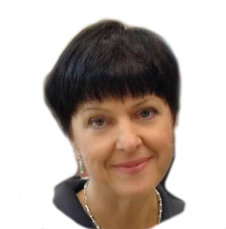

Marina, logopedist with 20+ years of experience
History
About five years ago, I was contacted by parents of a family I knew, asking to help their son. They knew that I am a professional and qualified speech therapist with lots of education and experience from back home in Saint- Petersburg. Initially they thought that their boy had problems with pronouncing only the sound "Р".
After a brief consultation it appeared that besides not properly pronouncing the sounds "Р" and "РЬ", Maksim also had defects with many others (С, З, Ц, СЬ, ЗЬ, Ш, Ж, Ч, Щ, Л). There were more incorrect sounds than the correct ones!
I really wanted to help the boy out. The amount of work that needed to be done was enormous. I could not possibly fix everything myself. Everyday exercises at home and parent’s effort was needed. To help Maksim fix his pronunciation, we agreed that along with twice a week 30 minute sessions at my office, he would practice every day at home with his mom.
We began working on development sound articulation and preparation for his sound correction. At first it were the whistling sounds. Our first successful sound came in two weeks. This was the toughest part- after the first sound out of the group is established the rest are easier to correct. However, my work didn’t stop there, with Maxim I automated the sound so he would use it during his daily speech.
Making sure a child has a right pronunciation is not an easy task - some sounds are harder for some kids some aren’t. Maxim wasn’t an exception, he was struggling with his “р” sound and I had to work stretch his under tongue tendon with a special massage. Alongside of correcting all sounds I was working on overall child development.
After long months of work we finally saw the light at the end of the tunnel. All of the sounds have been correct and most importantly Maksim now used them in his speech. His vocabulary has also grown and his thoughts were not expressed in complete sentences. His parents were glowing of happiness. The results of our work surpassed their expectations. Seeing their faces made me also extremely happy. It’s a one of a kind satisfaction of helping out others. At this time I thought that I would not use my speech pathology profession for a while. However, with the recommendations of Maksim’s parents I began receiving a lot of calls with requests for help. I couldn’t say no.
Методики

Логоритмика
В логопедической работе я использую широкие средства для достижения наилучших и скорейших результатов в развитии речи в целом и ее звукопроизносительной стороны в частности. Одним из серьезных подспорьев я рассматриваю логоритмические распевки, с которых я обычно начинаю занятия.
Логоритмика в первую очередь полезна детям:- с заиканием или с наследственной предрасположенностью к нему
- с чересчур быстрой/медленной или прерывистой речью
- с недостаточно развитой моторикой и координацией движений
- с дизартрией, задержками развития речи, нарушениями произношения отдельных звуков
- часто болеющим и ослабленным, страдающиьми расстройствами пищеварения
- находящим ся в периоде интенсивного формирования речи (возраст от 2 до 4 лет)
Логопедический Mассаж
Большую помощь при работе с детьми с диагнозом дизартрия оказывает применение специального массажа. Его пользу трудно переоценить. Обычно я начинаю делать его сама, а позже учу родителей основным приемам, которые могут помочь расслабить или укрепить язык, тем самым способствуя постановке и закреплению звуков в речи. Логопедический массаж помогает изменять состояние тонуса мышц, нервов, кровеносных сосудов и тканей периферического речевого аппарата. Особенно значимо использование его на начальном этапе работы. Проводится наряду с пассивной, пассивно-активной, и активной артикуляционной гимнастикой. При формировании речевого дыхания, голоса, нормализации эмоционального состояния массаж может использоваться в комплексе с традиционными логопедическими и релаксационными упражнениями.